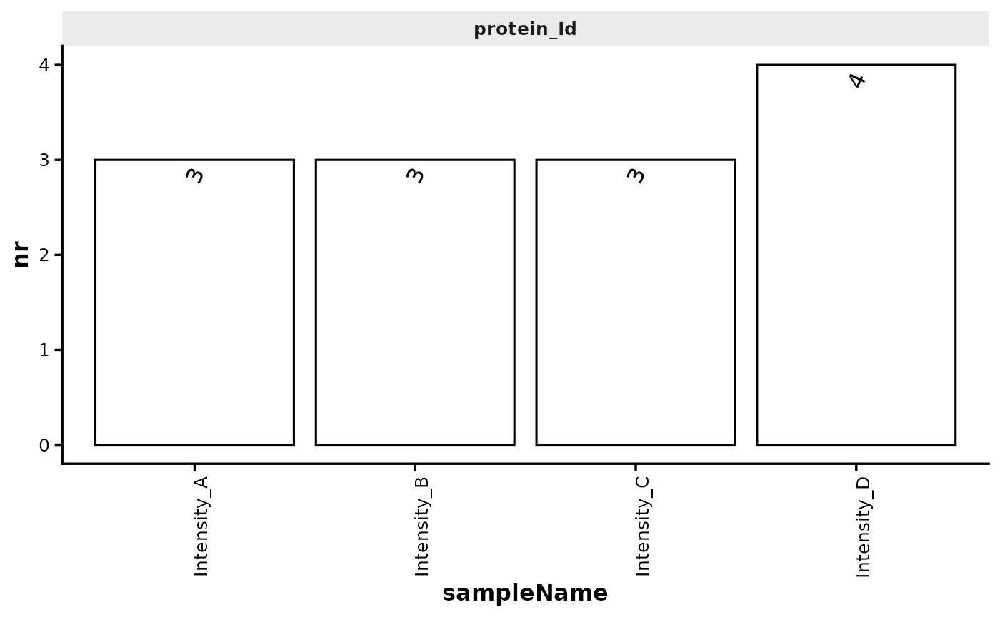
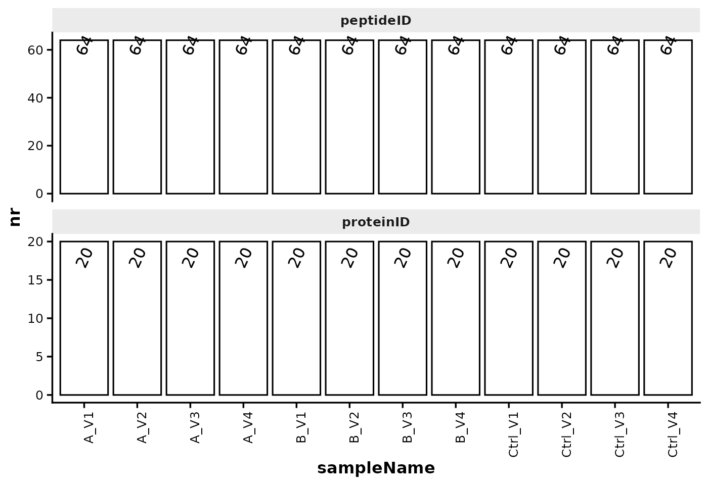

Importing your data: AnalysisConfiguration
Witold E. Wolski
2026-11-25
Source:vignettes/CreatingConfigurations.Rmd
CreatingConfigurations.Rmdprolfqua works on one table in long format, one row per feature
(protein, peptide or precursor) and sample, together with an
AnalysisConfiguration that says which column holds what.
This vignette builds both from a table you already have.
Output of quantification software
For the output of common quantification software, the prolfquapp package has
readers that return a ready LFQData object together with
the protein annotation:
- DIA-NN:
prolfquapp::preprocess_DIANN() - MaxQuant:
prolfquapp::preprocess_MQ_peptide() - Spectronaut:
prolfquapp::preprocess_BGS() - FragPipe:
prolfquapp::preprocess_FP_PSM() - MSstats-formatted tables:
prolfquapp::preprocess_MSstats()
They need the FASTA file used for the search. prolfquapp is installed
from GitHub; see its README. The rest of this vignette shows how to
build an LFQData object from any other table.
A table in wide format
Frequently, the data are available in tables where the rows are proteins and the columns are samples. In the example, the first column holds the protein identifier and the other columns the intensities of samples A to D.
df <- data.frame(
protein_Id = c("tr|A|HUMAN", "tr|B|HUMAN", "tr|C|HUMAN", "tr|D|HUMAN"),
Intensity_A = c(100, 10000, 10, NA),
Intensity_B = c(NA, 9000, 20, 100),
Intensity_C = c(200, 8000, NA, 150),
Intensity_D = c(130, 11000, 50, 50)
)
df## protein_Id Intensity_A Intensity_B Intensity_C Intensity_D
## 1 tr|A|HUMAN 100 NA 200 130
## 2 tr|B|HUMAN 10000 9000 8000 11000
## 3 tr|C|HUMAN 10 20 NA 50
## 4 tr|D|HUMAN NA 100 150 50This table can be converted into a table in long format:
table_long <- tidyr::pivot_longer(df, dplyr::starts_with("Intensity_"), names_to = "Sample", values_to = "Intensity")
table_long## # A tibble: 16 × 3
## protein_Id Sample Intensity
## <chr> <chr> <dbl>
## 1 tr|A|HUMAN Intensity_A 100
## 2 tr|A|HUMAN Intensity_B NA
## 3 tr|A|HUMAN Intensity_C 200
## 4 tr|A|HUMAN Intensity_D 130
## 5 tr|B|HUMAN Intensity_A 10000
## 6 tr|B|HUMAN Intensity_B 9000
## 7 tr|B|HUMAN Intensity_C 8000
## 8 tr|B|HUMAN Intensity_D 11000
## 9 tr|C|HUMAN Intensity_A 10
## 10 tr|C|HUMAN Intensity_B 20
## 11 tr|C|HUMAN Intensity_C NA
## 12 tr|C|HUMAN Intensity_D 50
## 13 tr|D|HUMAN Intensity_A NA
## 14 tr|D|HUMAN Intensity_B 100
## 15 tr|D|HUMAN Intensity_C 150
## 16 tr|D|HUMAN Intensity_D 50In addition you need a table with the sample annotation. In this example there are three groups, A, B and C.
annot <- data.frame(
Sample = c("Intensity_A", "Intensity_B", "Intensity_C", "Intensity_D"),
Group = c("A", "A", "B", "C")
)Join the annotation to the intensities. Protein-level data should also say from how many peptides each protein intensity was computed in each sample; some methods use this count as a weight. It is unknown here, so it is set to 1.
table_long <- dplyr::inner_join(annot, table_long, by = "Sample")
table_long$nr_children <- 1LCreate an AnalysisConfiguration and name the columns:
which one identifies the sample and which one holds the intensities.
config <- prolfqua::AnalysisConfiguration$new()
config$file_name <- "Sample"
config$work_intensity <- "Intensity"The columns identifying the measured features, which are proteins,
peptides or precursors, are described using the named list
hierarchy. The values of the list are the column names,
while the names are arbitrary as long as they are valid R column names.
Here we use the same names as the column names.
The list factors points to the columns with the
explanatory variables of the analysis (Group).
config$hierarchy[["protein_Id"]] <- "protein_Id"
config$factors[["Group"]] <- "Group"setup_analysis() checks the table against the
configuration and completes it, and LFQData$new() creates
the data object.
analysis_data <- prolfqua::setup_analysis(table_long, config)
lfqdata <- prolfqua::LFQData$new(analysis_data, config)
lfqdata$hierarchy_counts()## # A tibble: 1 × 1
## protein_Id
## <int>
## 1 4
smrz <- lfqdata$get_Summariser()
smrz$plot_hierarchy_counts_sample()
A matrix with row and sample annotation
When the intensities are already a matrix, with features in rows and
samples in columns, plus a table describing the rows and one describing
the samples, lfqdata_from_wide() builds the
LFQData object directly. It is the inverse of
LFQData$data_wide(as.matrix = TRUE); row i of
the matrix belongs to row i of the row table.
intensities <- as.matrix(df[, -1])
rowdata <- data.frame(protein_Id = df$protein_Id)
samples <- data.frame(
sampleName = annot$Sample,
Sample = annot$Sample,
Group = annot$Group
)
children <- matrix(1L, nrow = nrow(intensities), ncol = ncol(intensities), dimnames = dimnames(intensities))
from_wide <- prolfqua::lfqdata_from_wide(
list(Intensity = intensities, nr_children = children),
rowdata,
samples,
config
)
from_wide$hierarchy_counts()## # A tibble: 1 × 1
## protein_Id
## <int>
## 1 4A table in long format
Long tables, such as the reports of Spectronaut, Skyline or DIA-NN, need only a configuration. Here a simulated peptide table stands in for such a report:
dataLongFormat <- prolfqua::sim_lfq_data(n_proteins = 20, peptide = TRUE)
head(dataLongFormat)## # A tibble: 6 × 12
## proteinID idtype2 average_prot_abundance sd peptideID sample group mean
## <chr> <chr> <dbl> <dbl> <chr> <chr> <chr> <dbl>
## 1 5pb90S 1460 20.5 1 mpxNAbn2 Ctrl_V1 Ctrl 0
## 2 5pb90S 1460 20.5 1 mpxNAbn2 Ctrl_V2 Ctrl 0
## 3 5pb90S 1460 20.5 1 mpxNAbn2 Ctrl_V3 Ctrl 0
## 4 5pb90S 1460 20.5 1 mpxNAbn2 Ctrl_V4 Ctrl 0
## 5 5pb90S 1460 22.5 1 mpxNAbn2 A_V1 A -2
## 6 5pb90S 1460 22.5 1 mpxNAbn2 A_V2 A -2
## # ℹ 4 more variables: N <dbl>, avg_peptide_abd <dbl>, Replicate <chr>,
## # abundance <dbl>The sample is in the column sample and the intensity in
abundance. Each row is one peptide, so it counts as one
child of its protein:
dataLongFormat$nr_children <- 1L
config <- prolfqua::AnalysisConfiguration$new()
config$file_name <- "sample"
config$work_intensity <- "abundance"The hierarchy has two levels here, protein and peptide. The names of
factors are the names used in model formulas, figures and
legends; they can differ from the column names, for example
config$factors[["Condition"]] <- "R.Condition" for a
Spectronaut report. A table can hold several factors.
config$hierarchy[["proteinID"]] <- "proteinID"
config$hierarchy[["peptideID"]] <- "peptideID"
config$factors[["group"]] <- "group"setup_analysis() creates from the long table a table
that matches the configuration, and LFQData$new() the data
object, which is the start of every further analysis.
analysis_data <- prolfqua::setup_analysis(dataLongFormat, config)
lfqdata <- prolfqua::LFQData$new(analysis_data, config)
lfqdata$summarize_hierarchy()## # A tibble: 20 × 2
## proteinID peptideID_n
## <chr> <int>
## 1 1DIdTQ 6
## 2 1SO1NY 2
## 3 2JOCP3 6
## 4 5pb90S 2
## 5 OyHgjC 2
## 6 PDPfVe 2
## 7 TvODf3 2
## 8 UHjlsA 2
## 9 UmCi4L 1
## 10 Vphs0t 6
## 11 Xp1Tno 1
## 12 de5llz 2
## 13 hwBDgU 2
## 14 pGZKaB 1
## 15 rNWbGH 1
## 16 wXXHRN 6
## 17 yOSJAW 6
## 18 yj3Whg 10
## 19 z9WqiE 2
## 20 zVMmad 2With this, it is possible for example to use the
get_Summariser function to visualize and summarise the
data.
smrz <- lfqdata$get_Summariser()
smrz$plot_hierarchy_counts_sample()
Number of peptides found in each sample
The prolfqua package is described in (Wolski et al. 2023).
Session Info
## R version 4.6.2 (2026-10-29)
## Platform: x86_64-pc-linux-gnu
## Running under: Ubuntu 26.04.1 LTS
##
## Matrix products: default
## BLAS: /usr/lib/x86_64-linux-gnu/openblas-pthread/libblas.so.3
## LAPACK: /usr/lib/x86_64-linux-gnu/openblas-pthread/libopenblasp-r0.3.32.so; LAPACK version 3.12.0
##
## locale:
## [1] LC_CTYPE=C.UTF-8 LC_NUMERIC=C LC_TIME=C.UTF-8
## [4] LC_COLLATE=C.UTF-8 LC_MONETARY=C.UTF-8 LC_MESSAGES=C.UTF-8
## [7] LC_PAPER=C.UTF-8 LC_NAME=C LC_ADDRESS=C
## [10] LC_TELEPHONE=C LC_MEASUREMENT=C.UTF-8 LC_IDENTIFICATION=C
##
## time zone: UTC
## tzcode source: system (glibc)
##
## attached base packages:
## [1] stats graphics grDevices utils datasets methods base
##
## other attached packages:
## [1] BiocStyle_2.40.0
##
## loaded via a namespace (and not attached):
## [1] sass_0.5.0 utf8_1.2.6 generics_0.1.4
## [4] tidyr_1.3.2 stringi_1.8.9 digest_0.6.39
## [7] magrittr_2.0.5 evaluate_1.0.5 grid_4.6.2
## [10] RColorBrewer_1.1-3 bookdown_0.48 fastmap_1.2.0
## [13] jsonlite_2.0.0 ggrepel_0.9.8 limma_3.68.5
## [16] prolfqua_1.9.6 BiocManager_1.30.27 purrr_1.2.2
## [19] scales_1.4.0 textshaping_1.1.0 jquerylib_0.1.4
## [22] cli_3.6.6 rlang_1.3.0 withr_3.0.3
## [25] cachem_1.1.0 yaml_2.3.12 otel_0.3.0
## [28] tools_4.6.2 dplyr_1.2.1 ggplot2_4.0.4
## [31] vctrs_0.7.3 R6_2.6.1 lifecycle_1.0.5
## [34] stringr_1.6.0 fs_2.1.0 htmlwidgets_1.6.4
## [37] MASS_7.3-66 ragg_1.5.2 pkgconfig_2.0.3
## [40] desc_1.4.3 pkgdown_2.2.1 pillar_1.11.1
## [43] bslib_0.12.0 gtable_0.3.6 glue_1.8.1
## [46] Rcpp_1.1.2 statmod_1.5.2 systemfonts_1.3.4
## [49] xfun_0.62 tibble_3.3.1 tidyselect_1.2.1
## [52] knitr_1.52 farver_2.1.2 htmltools_0.5.9
## [55] rmarkdown_2.32 labeling_0.4.3 compiler_4.6.2
## [58] S7_1.0.0